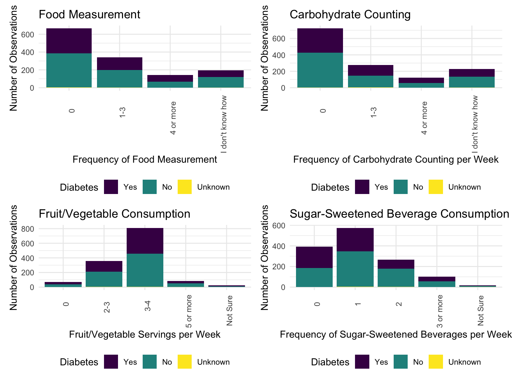

Selected Analyses and Conclusions
This section of the website outlines the key exploratory analyses used to understand the data, as well as the predictive model developed as part of this project. To see the methods of the site in more detail, please go to to the “Complete Report” tab.
Demographic Characteristics of Participants
measure_austin3 <- measure_austin
measure_austin3$education_level <- factor (measure_austin3$education_level, levels = c("none", "1-08","9-11","High School GED", "Some College", "College"))
present_austin =
measure_austin3 %>%
rename("Gender" = "gender",
"Age" = "age",
"Race" = "race_ethnicity",
"Language" = "class_language",
"Insurance" = "insurance_category",
"Medical" = "medical_home_category",
"Education" = "education_level")
demographic_table <- table1(~ factor(Gender) + Age + factor(Race) + factor(Language) + factor(Education) + factor(Insurance) + factor(Medical), data = present_austin)
demographic_table| Overall (N=1380) |
|
|---|---|
| factor(Gender) | |
| F | 1109 (80.4%) |
| M | 271 (19.6%) |
| Age | |
| Mean (SD) | 48.9 (15.1) |
| Median [Min, Max] | 48.0 [16.0, 91.0] |
| Missing | 19 (1.4%) |
| factor(Race) | |
| American Indian | 5 (0.4%) |
| Asian | 36 (2.6%) |
| Black/African American | 302 (21.9%) |
| Hispanic/Latino | 896 (64.9%) |
| Other | 8 (0.6%) |
| Unknown | 1 (0.1%) |
| White | 119 (8.6%) |
| Missing | 13 (0.9%) |
| factor(Language) | |
| Chinese/English | 14 (1.0%) |
| English | 568 (41.2%) |
| Spanish | 798 (57.8%) |
| factor(Education) | |
| none | 1 (0.1%) |
| 1-08 | 343 (24.9%) |
| 9-11 | 256 (18.6%) |
| High School GED | 285 (20.7%) |
| Some College | 218 (15.8%) |
| College | 276 (20.0%) |
| Missing | 1 (0.1%) |
| factor(Insurance) | |
| MAP | 160 (11.6%) |
| Medicaid | 147 (10.7%) |
| MediCARE | 165 (12.0%) |
| None | 371 (26.9%) |
| Other | 245 (17.8%) |
| Private insurance | 239 (17.3%) |
| Missing | 53 (3.8%) |
| factor(Medical) | |
| CommUnityCare | 344 (24.9%) |
| Doctor's Office | 363 (26.3%) |
| El Buen Samaritano | 93 (6.7%) |
| Emergency Room | 23 (1.7%) |
| Lone Star Circle of Care | 49 (3.6%) |
| No regular place of care | 117 (8.5%) |
| Other | 131 (9.5%) |
| People's Community Clinic | 152 (11.0%) |
| Seton Clinics | 54 (3.9%) |
| Missing | 54 (3.9%) |
The vast majority of participants included in the dataset (80.4%) are women. On average, participants are 49 (SD = 15.1). More than half (64.9%) of participants are Hispanic/Latino and the majority (57.8%) speak Spanish as their first language. More than one-quarter (26.9%) of participants are uninsured and about one-fifth (22.7%) are on MediCARE or Medicaid. CommUnity Care (24.9%) and Doctor’s Offices (26.3%) are the most common medical homes of participants.
Presence of Pre-Existing Medical Conditions/Comorbidities/health risk-factors
health_table | Overall (N=1380) |
|
|---|---|
| factor(CVD) | |
| Yes | 104 (7.5%) |
| No | 1243 (90.1%) |
| Missing | 33 (2.4%) |
| factor(Hypertension) | |
| Yes | 499 (36.2%) |
| No | 852 (61.7%) |
| Missing | 29 (2.1%) |
| factor(Tobacco) | |
| Yes | 91 (6.6%) |
| No | 1219 (88.3%) |
| Missing | 70 (5.1%) |
The vast majority of participants do not have health risk factors/pre-existing conditions that may influence PAID scale score. Very few participants (7.5%) have cardiovascular disease (CVD), less than one-tenth (6.6%) smoke, and less than one-half (36.2%) report having hypertension.
Diet and Exercise
(food_measure + carbs_count) / (fruits_freq + sugar_sweet)
Participants with and without diabetes tended to perform relatively similarly on dietary factors associated with diabetes management. While the majority of participants consume 3-4 servings of fruits/vegetables per week, a very small proportion of participants measures their food or counts carbohydrates more than once per week. The majority of participants consume 0-1 sugar-sweetened beverages every week.
exercise_diabetes
Diabetes Knowledge
Participants who had never received diabetes education in the past were more likely to self-report their knowledge of diabetes management as “poor.” A larger proportion of participants who had received previous diabetes education reported having “good” knowledge of diabetes management as compared to those who had not had previous diabetes education.
Predictive Model of PAID Scale Scores
I used a backwards stepwise regression approach to determine which predictors drive Problem Area in Diabetes (PAID) Scale Score. A full description of my methods can be found in the “Complete Report” tab.
After excluding variables that were not contributing significantly to the model, I found that high blood pressure, insurance category, education level, and weekly servings of fruits/vegetables are significantly associated with PAID scale scores. These variables were used to construct my final model.
summary(paid_model10)##
## Call:
## lm(formula = problem_area_in_diabetes_paid_scale_score ~ insurance_category +
## education_level + high_blood_pressure_yes_no + factor_fruits,
## data = measure_austin)
##
## Residuals:
## Min 1Q Median 3Q Max
## -55.751 -19.546 0.185 18.016 71.775
##
## Coefficients:
## Estimate Std. Error t value Pr(>|t|)
## (Intercept) 71.9414 5.6750 12.677 < 2e-16 ***
## insurance_categoryMedicaid -12.1214 4.5171 -2.683 0.00754 **
## insurance_categoryMediCARE -6.4034 4.3192 -1.483 0.13884
## insurance_categoryNone -4.9238 4.0598 -1.213 0.22579
## insurance_categoryOther -2.3489 4.2861 -0.548 0.58393
## insurance_categoryPrivate insurance -3.6903 4.2970 -0.859 0.39087
## education_level9-11 -0.3204 3.6783 -0.087 0.93063
## education_levelCollege -18.7921 3.4347 -5.471 7.17e-08 ***
## education_levelHigh School GED -14.0495 3.2798 -4.284 2.22e-05 ***
## education_levelSome College -18.7982 3.5359 -5.316 1.62e-07 ***
## high_blood_pressure_yes_noYes -6.5702 2.2648 -2.901 0.00389 **
## factor_fruits2-3 -15.2252 5.1431 -2.960 0.00322 **
## factor_fruits3-4 -7.4403 4.8315 -1.540 0.12422
## factor_fruits5 or more -16.9441 6.3265 -2.678 0.00765 **
## factor_fruitsNot Sure -5.7953 8.7118 -0.665 0.50623
## ---
## Signif. codes: 0 '***' 0.001 '**' 0.01 '*' 0.05 '.' 0.1 ' ' 1
##
## Residual standard error: 24.28 on 485 degrees of freedom
## (880 observations deleted due to missingness)
## Multiple R-squared: 0.1976, Adjusted R-squared: 0.1744
## F-statistic: 8.529 on 14 and 485 DF, p-value: < 2.2e-16Education emerged as a significant predictor of low PAID scale score: participants with a high school GED, some college, or a college degree had, on average, PAID scores that were 14.05, 18.80, and 18.79 points lower, respectively, than those with 1-08 years of schooling.
Surprisingly, people with high blood pressure have significantly lower PAID scale scores than those with normal or low blood pressure. This may reflect increased access to care and education among people managing more than one condition concurrently.
Fruit and vegetble consumption was the only significant dietary predictor of PAID scale score. Participants who consumed 2-3 servings per week had, on average, PAID scale scores that were 15.23 points lower than participants who did not consume any fruits or vegetables. People who consumed 5 or more servings per week had scores that were, on average, 16.94 points lower than those who consumed 0 servings. This suggests that increasing fruit and vegetable consumption is a modifiable factor that can have significant impacts on diabetes management.
Somewhat surprisingly, participants using Medicaid as their primary insurance have, on average, a PAID scale score that is 12.12 points lower compared to people using MAP insurance. Additional research is required to understand this link. It is possible that the population of people on Medicaid are younger, on average, than those using other forms of insurance, which could drive better PAID scale scores.
Conclusions
This analysis demonstrates that fruit and vegetable consumption is a modifiable lifestyle factor that can significantly improve management of diabetes.
Future education courses should place additional emphasis on healthy food consumption as opposed to food measurement/carbohydrate counting. Healthy recipes, cooking classes, and peer support for good nutrition may increase servings of fruits and vegetables among people managing diabetes.